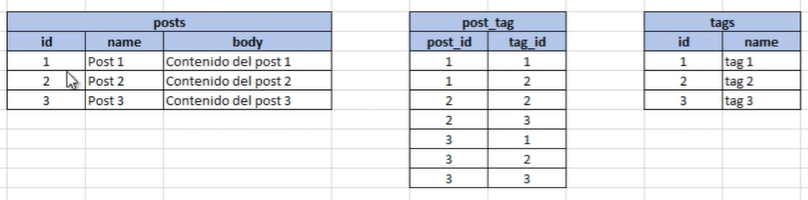

Esta relacion se da como la anterior, solo que las dos tablas estan en relacion muchos a muchos con la tabla principal.
Aqui tenemos las tablas posts y videos que estan en relacion muchos a muchos con la tabla tags.
Entonces le aplicamos la del "...able_id" y "...able_type":
$table->id('taggable_id');
$table->unsignedBigInteger('tag_id');
$table->string('taggable_type');
$table->foreign('tag_id')
->references('id')
->on('tags')
->constrained()
->onDelete('cascade');
$table->timestamps();
Establece la relacion Polimorfica Many To Many en los modelos Pots y Video:
// Polymorphic Many To Many
public function tags()
{
return $this->morhpToMany('App\Models\Tag', 'taggables');
}
Establece las relaciones inversas polimorficas en el modelo Tag:
// Inverse Polymorphic Many To Many
public function posts()
{
return $this->morhpedByMany('App\Models\Post', 'taggable');
}
public function videos()
{
return $this->morhpedByMany('App\Models\Video', 'taggable');
}
En las migraciones este metodo es el equivalente a los dos "...able_id" y "...able_type":
$table->morph('taggable');
// Equivalente a:
$table->string('taggable_id');
$table->string('taggable_type');